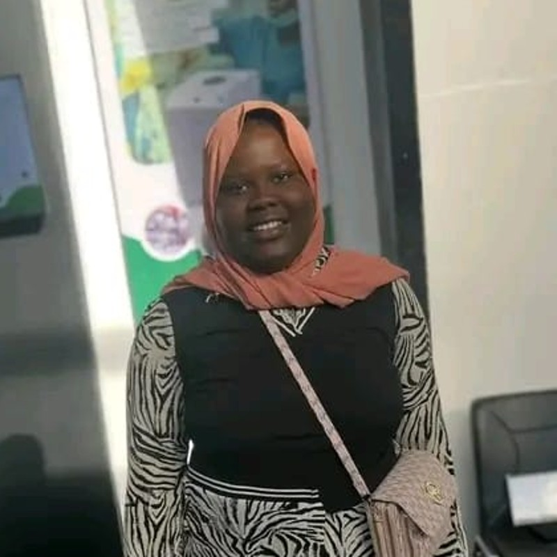

Ouleymatou BiayeDéveloppeuse Web Full-Stack
Diplômée de l'UADB, cofondatrice et responsable technique d'EkoSafe — une plateforme qui connecte producteurs ruraux et acheteurs urbains au Sénégal. Laravel, React/TypeScript, Spring Boot.

Passionnée du web.
Je conçois des applications pensées pour le terrain — de la plateforme agritech qui connecte producteurs et acheteurs, aux outils qui simplifient la vie de tous les jours. Cloud, DevOps et développement fullstack sont mes terrains de jeu.
Mon parcours
Originaire de Thiès, j'ai suivi une licence en développement et administration d'applications web à l'Université Alioune Diop de Bambey, obtenue en juillet 2026 avec la mention Bien (15/20) — une progression depuis les bases en Java/JavaFX et administration Linux jusqu'au développement fullstack moderne.
Pendant ce parcours, j'ai été ambassadrice de l'Orange Digital Center de Bambey et championne régionale de Thiès pour MOHEBS, un programme d'éducation bilingue. C'est aussi durant ces trois années qu'est né EkoSafe, aujourd'hui mon projet phare.
Entre mars et juin 2026, j'ai aussi développé en tant que bénévole fullstack pour Guisnako, avant de me consacrer pleinement à EkoSafe.
- FrançaisCourant
- EnglishFluent — CAPLA
- WolofCourant
- EspañolIntermédiaire
EkoSafe
EkoSafe
Cofondatrice & responsable techniqueUne plateforme agritech qui connecte les producteurs ruraux — fruits, légumes, produits laitiers, viandes — aux acheteurs urbains du Sénégal, avec un canal SMS/Wolof pour les producteurs peu connectés, un paiement intégré via PayDunya et un suivi transporteur par code OTP. Cofondée avec Awa Biaye, agronome.
Autres projets
Ce que je fais
Développement Full-Stack
Applications web complètes, du frontend React/TypeScript au backend Laravel et Spring Boot.
Bases de données
Conception et modélisation UML, MySQL, Oracle, gestion de données pour applications fiables.
Gestion de projet
Structuration d'un projet de bout en bout, communication d'équipe, droit des TIC.
Formation & certifications
On crée quelque chose de beau et de significatif ?
Ouverte aux collaborations, missions freelance et opportunités liées à EkoSafe ou au développement fullstack.